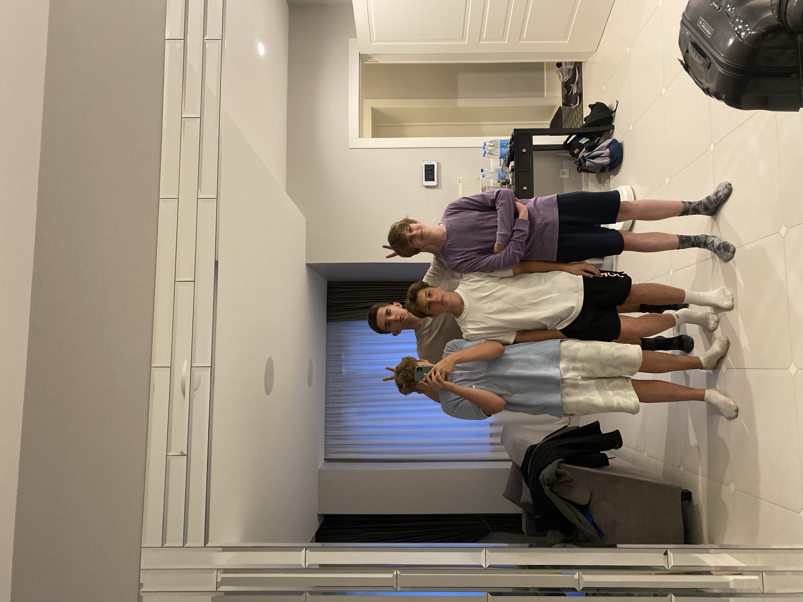
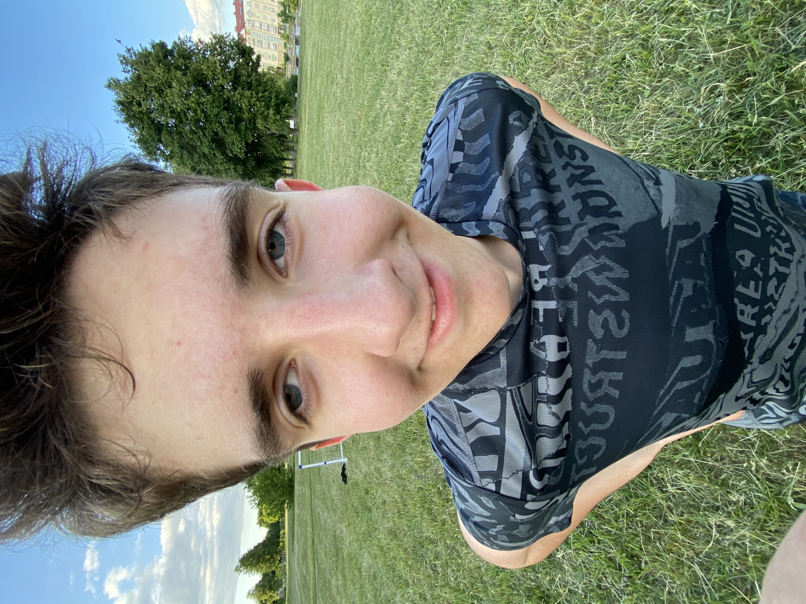
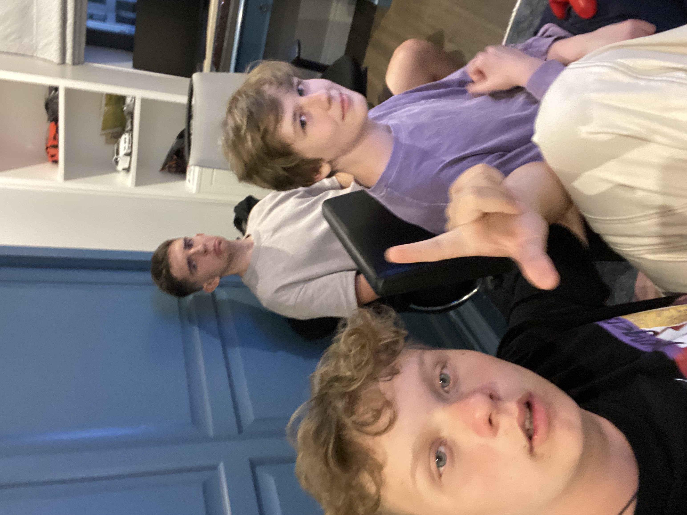

<!DOCTYPE html>
<html lang="en">
  <head>
    <meta charset="UTF-8" />
    <meta http-equiv="X-UA-Compatible" content="IE=edge" />
    <meta name="viewport" content="width=device-width, initial-scale=1.0" />
    <link rel="stylesheet" href="./css/index.css" />
    <link
      href="https://cdn.jsdelivr.net/npm/bootstrap@5.3.0/dist/css/bootstrap.min.css"
      rel="stylesheet"
      integrity="sha384-9ndCyUaIbzAi2FUVXJi0CjmCapSmO7SnpJef0486qhLnuZ2cdeRhO02iuK6FUUVM"
      crossorigin="anonymous"
    />

    <title>SHVEDA</title>
  </head>

  <body>
    <div class="dima"></div>
    <!--         <header>
            <nav class="navbar">
                <div>
                    <h2>SHVEDA</h2>
                </div>
                <div class="nav-links">
                    <ul>
                        <li>
                            <a href="./index.html">Главная</a>
                        </li>
                        <li>
                            <a href="./about.html">О нас</a>
                        </li>
                        <li>
                            <a href="./team.html">Состав</a>
                        </li>
                        <li>
                            <a href="./contacts.html">Контакты</a>
                        </li>
                    </ul>
                </div>
                
                
            </nav>
        </header>
        <main>
            <div class="image-welcome">
                <h2 class="welcome">Футбольный клуб "SHVEDA" приветствует.</h2>
            </div>
            <div class="container">
                <h1 class="text-for-blocks">Почему мы создали команду?</h1>
                <div class="blocks">
                    <div class="block">

                        <div class="items">
                            <h2>Любовь к футболу</h2>
                            <p>Игроки в нашей команде очень любят футбол и поэтому у них появилось желание создать
                                футбольный клуб.
                            </p>
                        </div>
                    </div>
                    <div class="block">

                        <div class="items">
                            <h2>Поле</h2>
                            <p>У нас всегда была возможность создать поле, так как было очень много места. А чтобы
                                играть в футбол нужно поле, и если бы у нас не было возможности создать поле, возможно,
                                нашей команды не было.
                            </p>
                        </div>
                    </div>
                    <div class="block">

                        <div class="items">
                            <h2>Дружба</h2>
                            <p>Все игроки шведы-друзья, которые знают друг друга давно. И в свободное время ребята
                                играли в футбол.
                            </p>
                        </div>
                    </div>

                </div>


                <div class="container">
                    <div class="history">
                        <div class="pictures">
                            <div class="column1">
                                
                                
                            </div>
                            <div class="column2">
                                
                                
                            </div>
                        </div>
                        <div class="text">
                            <h2 class="main-text">История команды</h2>
                            <p>Все началось летом 2020 года с создания клуба лфк «усход» там и начали играть будущее
                                игроки
                                лфк «шведа»
                                игры внутри команды проводились почти каждый день.
                                Но двум игрокам усхода это стало надоедать и они решили создать свою команду которая до
                                11.06.23 называлась лфк «бисты». Так и пришла идея создать лигу в которой мы выступаем
                                уже
                                два года.
                                первый матч в лиге закончился нашей победой,но не без труда.
                                Отыгрались со счета 1:5 и победили 7:6,
                                но в том сезоне мы упустили чемпионство буквально в последнем матче.
                                В этом году мы выступаем уверенно и настроены серьезно.
                            </p>
                            <button><a href="./about.html">Полная история</a></button>
                        </div>
                    </div>
                </div>
        </main>
        <footer></footer>
        <script>
            const menuHamburger = document.querySelector(".menu-hamburger")
            const navLinks = document.querySelector(".nav-links")

            menuHamburger.addEventListener('click', () => {
                navLinks.classList.toggle('mobile-menu')
            })
        </script> -->
  </body>
</html>
